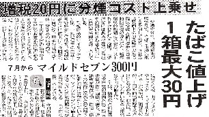

またタバコが値上げだって。

「愛煙家をねらい打ちするとは、実にケシカラン」と、大いに怒りたいところであるが、実は５／６を以て禁煙した。なのでいくら値上げになろうと痛くも痒くもない。(-_-； といっても値上げは
'06．７／１からだそうだが、それまで禁煙が続いているかは分からない。（^-^；
禁煙してから１週間しか経っていないので、“禁煙した”というより“禁煙チャレンジ中”というところ。それでも実は、タバコそのものは４／２０くらいから１本も吸ってない（それ以前の１週間ほどだって、一日数本程度）。それなら今日で禁煙23目と云いたいところだが、じつは５／５まではσ(-_-)の意志で禁煙していたわけではない。
今年に入ってから、どうも体調が思わしくなかった。そこで４月に入ってからタバコを止めようかなと思った。そして４／１０頃から喫煙量を、大幅に減らしてみた。禁断症状でも出るかと思ったが、そもそも体調が良くないのでどうと云うことはなかった。ところが４／２０頃から発熱した。とうぜんタバコなんぞは吸う気にならない。
風邪でもひいたと思って風邪薬を飲んでいたが、ちっとも良くならない。それどころか呼吸も困難になった。これはたまらんと４／２５に医者に飛んで行ったら、「あさみさん、即入院です」と云われた。しかし月末にかけて大事な仕事があった。そこで「頼むから入院は勘弁してくれ。その代わり、毎日通院する」と頼み込んで、点滴治療と投薬だけにしてもらった。
その日から５／５まで10日間、通院して午前と午後の１日２回の点滴の毎日。おかげで５／５には、「これでいちおう大丈夫と思うので、もう通院しなくていい」と云われた。ついでに「“即入院”だと云ったのに“仕事があるから”と云って断った患者はあんたが初めて」とも言われた。(-_-；
というわけで、おかげで体は回復した。しかしせっかく２週間ほどタバコを吸ってなかったので、これを機会にそのまま止めることにした。ところが体は回復しているので、今度は禁断症状が激しい。ガムを噛んだりアメをなめたりして回避しているが、もう吸いたくてたまらん。昨晩なんか、タバコを吸ってる夢をみた。(笑) う〜む、７／１まで持つかいな。（^-^；
|